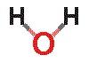

“...of all known liquids, water is probably the most studied and least understood.”
Felix Franks, 1972
 The water molecule
The water molecule
Water: a brief early History of its Science
The beginnings of water science
The discovery of hydrogen bonds
Water
Water's lone pairs
Water electronic structure
Water models
Water reactivity
Solubility; organic; inorganic
Easier introduction to the water molecule
The molecular orbitals of water, H2O
Hydrogen bonding
Introduction
Water hydrogen bonds
Water hydrogen bond length
Water hydrogen bond direction
Hydrogen-bonding and information transfer
Quantum effects
Rearranging hydrogen bonds
Hydrogen bonding and molecular recognition
Bifurcated hydrogen bonds
Information transfer
Hydrogen bonds and solubility
Water dimer and small clusters
Water dimer and trimer inside fullerenes
The water trimer, tetramer, and pentamer
The molecular orbitals of a water dimer, (H2O)2
The molecular orbitals of a water cyclic pentamer, (H2O)5
The phase diagram of water
Triple points
The Clausius Clapeyron equation
Hexagonally-patterned microdroplets
Very high-pressure ices including superionic ice
The 'ice-rules' and ice crystal imperfections
Ice crystal data
Ice Ic Jmol animation
Stacking disordered ice (Ice Isd) Jmol animation
Ice II Jmol animation
Ice III Jmol animation
Ice IV Jmol animation
Ice V Jmol animation
Ice VI Jmol animation
Ice VII Jmol animation
Ice VIII Jmol animation
Ice IX Jmol animation
Ice X Jmol animation
Ice XI Jmol animation
Ice XII Jmol animation
Ice XIII Jmol animation
Ice XIV Jmol animation
Ice XV Jmol animation
Stacking disordered ice; Ice Isd
Ice-sixteen and other ultra low-density ices
Amorphous ice and glassy water
Cold metastable glassy water
Ultra-viscous water and the glass transition temperature
Low-density amorphous ice (LDA)
Medium-density amorphous ice (MDA)
High-density amorphous ice (HDA)
Very-high-density amorphous ice (VHDA)
CS-I clathrate
CS-II clathrate
HS-III clathrate
Other structures
Molecular vibration and absorption of water
Absorption spectra of gaseous, liquid and solid water
The vibrational spectra of liquid water
The visible and UV spectra of liquid water
The spectrum of the Zundel cation
Absorption and penetration
Water dissociation, 2H2O = H3O+ + OH−
Variation in Kw with temperature and pressure
Acidity, basicity and the pKa of water
Ionic strength
Hydrogen ions
Hydroxide ions
Grotthuss mechanism
Diffusion of hydrogen ions
Diffusion of hydroxyl ions
The molecular orbitals of the H3O+ and OH− ions


The molecular orbitals of the hydrated hydroxide ion, H3O2−
The molecular orbitals of the dihydronium ions, H5O2+
Water at interfaces and nanobubbles
Water molecules confined in beryl nanovoids
Capillary rise
Capillary condensation
Cavity filling
Venturi effect
Capillary flow cause of ring stains
Interfacial water and water-gas interfaces
The surface of ice (Why is ice slippery?)
Metal interfaces
Silica interfaces
Surface potential
Zeta potential
Surface charge changes with pH
Evaporation and condensation
Thermodynamics of the liquid-gas surface for water
Nanobubbles (ultrafine bubbles)
Rationale for nanobubble stability
Nanobubble detection and characterization
Nanobubbles, preparation, and use
Seventy-four anomalous properties of water
The range of anomalous properties of water
Rationale for the low-temperature anomalies of liquid water
Water has unusually high melting point
Water has unusually high boiling point
Water has unusually high critical point
Solid water exists in a wide variety of stable structures
The thermal conductivity, shear
modulus and transverse sound velocity of ice reduce with increasing pressure
The structure of liquid water changes at high pressure
Supercooled water has two phases
Liquid water is easily supercooled but glassified with difficulty
A liquid water phase exists at very low temperatures
Liquid water may be easily superheated
Hot water freezes faster than cold water; the Mpemba effect
Warm water vibrates longer than cold water
Water molecules shrink as the temperature rises and expand as the pressure increases
A liquid-liquid transition occurs at about 330 K.
The density of ice increases on heating (up to 70 K)
Water expands on freezing
Pressure reduces ice's melting point
Cold liquid water has a high-density
that increases on warmining
The surface of water is denser than the bulk
Pressure reduces the temperature of maximum density
There is a minimum in the density of supercooled water
Water has a low thermal expansivity
Water's thermal expansivity reduces at low temperatures
Water's thermal expansivity increases with increased pressure
The number of nearest neighbors increases on melting
Nearest neighbors increases with temperature
Water has unusually low compressibility
The compressibility drops as temperature increases
The compressibility-temperature maximum
The speed of sound increases with temperature up to 74 °C
The speed of sound may show a minimum
'Fast sound' is found at high frequencies
NMR relaxation time is very small at low temperatures
The NMR shift increases to a maximum at low (supercool) temperatures
The refractive index of water has a maximum value
The change in volume as liquid changes to gas is very large
No aqueous solution is ideal
D2O and T2O differ significantly from H2O
Liquid H2O and D2O differ significantly in their phase behavior
H2O
and D 2O ices differ significantly in their quantum behavior (nuclear isotope effect)
The mean kinetic energy of water's hydrogen atoms increases at low temperature (disputed)
Solutes have varying effects on water's properties
nonpolar gases solubility decreases with temperature
The dielectric constant of water and ice are high
The relative permittivity shows a temperature maximum
The relative permittivity shows a 'kink' in its behavior with temperature at 60 °C
Proton and hydroxide ion mobilities are anomalously fast
The electrical conductivity of water rises to a maximum
The electrical conductivity of water rises with frequency
Acidity constants of weak acids show temperature minima
X-ray diffraction shows an unusually detailed structure
Under high-pressure, water molecules move apart
Water adsorption may cause negative electrical resistance
Thermodynamic anomalies T1-T11
The heat of fusion of water exhibits a maximum at -17 °C
Water has higher specific heat capacity than ice or steam
The specific heat capacity (CP and CV) is unusually high
The specific heat capacity CP has a minimum at 36°
The specific heat capacity (CP) has a maximum
The specific heat capacity (CP) has a pressure minimum
The heat capacity (CV) has a maximum
High heat of vaporization
High heat of sublimation
High entropy of vaporization
The thermal conductivity of water is high
Water has unusually high viscosity
Large viscosity and Prandtl number increase as the temperature is lowered
Water's viscosity decreases with pressure below 33 °C
Large diffusion decrease as the temperature is lowered
The self-diffusion of water increases with the density
The thermal diffusivity rises to a maximum at about 0.8 GPa
Water has unusually high surface tension
Some salts give a surface tension minimum; the Jones-Ray effect
Some salts prevent the coalescence of small bubbles
The molar ionic volumes of salts show maxima with respect to temperature
Unexpected properties of water
Vapor pressure-Temperature behavior
Pressure-Temperature-Density behavior
Temperature-viscosity behavior
Temperature-enthalpy of vaporization relationship
Logarithmic relationships emanating from 228 K
Properties of water and its isotopologues
Vienna Standard Mean Ocean Water
Short properties list for liquid H2O
Changes in some properties with temperature (-30 °C - 100 °C)
Changes in some further properties with temperature (0 °C - 373 °C)
Water-related molecules; comparative data
The temperature scale and absolute zero>
The Zeroth Law of Thermodynamics
The First Law of Thermodynamics
The Second Law of Thermodynamics
The Third Law of Thermodynamics
Chemical potential
Internal energy
Heat capacity and specific heat
Important constants and conversion factors
Water model descriptions
Water model properties
The Lennard-Jones relationship
 Water clustering in liquid water
Water clustering in liquid water
Overview of the structuring in liquid water
Water clustering
Cluster lifetimes and hydrogen-bond lifetimes are independent
Icosahedral water cluster
The lifetime of the clusters
Introduction to water clustering
Water's two-state cluster history
Is liquid water one liquid or two?
Icosahedral clustering and the two-state mixture model?
Outline of methods for investigating water structure
Why different methods give different water structures?
Dielectric spectroscopy
Diffraction methods
Modeling
Nuclear Magnetic Resonance (NMR)
Osmotic stress
Physical properties
Vibrational spectra (Raman and infrared)
Terahertz (THz) absorption spectroscopy
Microwave (GHz) absorption spectroscopy
Sum frequency generation (SFG)
X-Ray spectroscopy
Gaussian and Lorentzian curves
(H2O)100 and (H2O)280 clusters Jmol animation
(H2O)280 cluster equilibria Jmol animation
Tetrahedral (H2O)14 cluster Jmol animation
The icosahedral (H2O)280 water clusters
Tetrahedral units
Icosahedral clusters
Cluster equilibria
Cluster equilibria details
Cluster density
Sub-structures of the icosahedral water cluster
Connectivity map of the water icosahedron
Solid geometry of the icosahedral cluster (Java)
Super-cluster ((H2O)280)13 Jmol animation
Super network ((H2O)100)n Jmol animation
Cluster puckering Jmol animation
Tetrahedra cluster Jmol animation
Bicyclo-octamers cluster Jmol animation
Super-clusters of water molecules
Water cluster equilibria, puckering and temperature effects

Water icosahedral cluster architecture
Spherical coordinates of the icosahedral water clusters
Shell radii and occupancy of the icosahedral water clusters
Alternative icosahedral clusters Jmol animation
Alternative tetrahedral clusters Jmol animation
Cavities and networks, Jmol animation
Clathrate-like, Jmol animation
Super-clusters of water molecules
Alternative icosahedral clustering of water
Alternative tetrahedral clustering of water
Water cluster architecture, based on gas clathrates
Paper model of an icosahedral water structure
Paper model of a truncated icosahedral water structure
Plain paper model of the layers of a truncated icosahedral water structure
Evidence for icosahedral water clusters
The radial distribution function
Other support from diffraction data
How can a liquid have a structure?
Does the radial distribution peak at about 3.7 Å exist?
Is there a fine structure in the radial distribution function?
Do
interstitial water molecules exist?
Support from clathrate structures
Evidence from amorphous ice and low-density water
Other evidence
The fragile to strong transition
 Hydration
Hydration
The contribution of water to protein structure
Water in protein recognition and binding
Water in protein and enzyme function
Enzymic reactions in biphasic liquid systems
Protein
folding and denaturation
Protein folding
Protein crystallization
Protein denaturation
Prions
Hydrogen bonds in the nucleic acids
Cholesterol and membrane hydration
Aqueous properties of the cyclodextrins
Polysaccharide
hydration
Hydration
Alternatives for defining bound and unbound water
Polar effects, for example, α-D-galacturonic acid
Weak hydrogen-bonding, for example, α-L-arabinofuranose
Strong hydrogen-bonding, for example, β-1-4-linked D-xylose
Hydrophobic effects, for example, β-1-4-linked D-xylose
Effects of other solutes: non-ionic
Effects of other solutes: ionic
Conclusions concerning polysaccharide hydration
Introduction to polysaccharides
Chart showing the furan pseudo-rotational angles of ribose and deoxyribose
Mixtures of hydrocolloids
Effect on viscosity
Hydrocolloid action
Hydrogels
Agar Jmol animation
Alginate Jmol animation
Arabinoxylan Jmol animation
Carrageenan Jmol animation
CMC Jmol animation
Cellulose Jmol animation
Curdlan Jmol animation
Gelatin Jmol animation
Source
Structural unit
Molecular structure
Functionality
Source
Structural unit
Molecular structure
Functionality
Source
Structural unit
Molecular structure
Functionality
Source
Structural unit
Molecular structure, κ-, ι-, λ- carrageenans,
Helices
Functionality
Source
Structural unit
Molecular structure
Functionality
Sources for cellulose
Structural unit
Molecular structure
Microcrystalline cellulose
Functionality
Source
Structural unit
Molecular structure
Functionality
Sources for gelatin
Structural unit
Molecular structure
Functionality and concerns
Source
Structural unit
Molecular structure
Functionality
Source
Structural unit
Molecular structure
Functionality
Source
Structural unit
Molecular structure
Functionality
Other similar gums
Guar gum Jmol animation
Locust bean gum Jmol animation
Pectin Jmol animation
Starch Jmol animation
Xanthan gum Jmol animation
Source
Structural unit
Molecular structure
Functionality
Source
Structural unit
Molecular structure
Functionality
Pectin sources
Pectin structural unit
Molecular structure
Functionality
Sources for starch
Structural unit
Molecular structure
Functionality
Source
Structural unit
Molecular structure
Functionality
Viscosity
Viscoelasticity
Structural effects
Further rheological terminology
Hydrocolloids and health (Dietary fiber)
The effect of dietary fiber in digestion
The colon
Colonic fermentation
Water-holding capacity (WHC)
Viscosity and gel formation
Binding to bile acids
Ion hydration and aqueous solutions of salts
What is meant by ion hydration
Methods for determining ion hydration
Ion pairs
Water clustering around ions
Sulfate and other large anions
The H3O+ magic number cluster ions
Water clustering around the SO42− cluster
Carbon dioxide hydration and equilibria
Carbon dioxide compared with carbon monoxide
Nitrogen oxides | N2O | NO | NO2
Nitrous and nitric acid
Why is hydrofluoric acid a weak acid?
Orthosilicic acid
Silica interfaces
Rationale
Thermodynamic properties
Effect on physical properties
Effect on solubility; ion-pairs
Stabilization of proteins
Hydrophobic and hydrophilic associations
The effect on biphasic partitioning
Definitions of kosmotropes and chaotropes
Ionic kosmotropes and chaotropes
Non-ionic kosmotropes and chaotropes
Urea
Imidazole
Guanidinium
α,α-Trehalose
Ectoine
Trimethylamine N-oxide (TMAO)
Hyaluronic acid
Hydrophobic versus hydrophilic interfaces
Extensive hydrophobic interfaces
Solubility effects
Hydrotropes
Salting-out and salting-in
Young's equation
Alcoholic solutions
Water transfer across membranes
Intracellular water
Intracellular solutions contain more K+ ions
Membranes help create a tendency towards low-density water in cells
The effect of intracellular protein on water structuring
The importance of protein carboxylate groups
The importance of protein mobility
Cooperative conversion of the water structuring
Actin, tubulins and the intermediate filaments
How many planets have life in the Universe
Water on Earth
Water in the mantle
Seawater
Water and global warming
Calcium carbonate equilibria
Water softening
Magnetic descaling
Solar powered water harvesting
Treatment of contaminated water
Can
life exist without water?
Consequences of changes in water’s hydrogen bond strength
Estimating the effect of changes in water hydrogen bond strength
Effect of water hydrogen bond strength on melting and boiling point
Effect of hydrogen bond strength on the temperature of maximum density
Effect of water hydrogen bond strength on kosmotropes and chaotropes
Effect of water hydrogen bond strength on its dissociation
Effect of water hydrogen bond strength on biomolecule hydration
Effect of water hydrogen bond strength on its other physical properties
Conclusions concerning water and life
Water content
Water balance
Water requirements
Water roles
Hydration
Drinking water
Water redox processes
The redox potential of water
Magnetic and electric effects on water
Electric effects on water
Magnetic effects on water
Electromagnetic effects on water
Magnetic descaling
Other related effects
Dielectric loss
Effect of salt
Electromagnetic penetration
Dielectric constant and polarization
Background information and definitions
Temperature and pressure
Polarization and polarizability
Refractive index
The complex dielectric permittivity behavior of water
The complex dielectric permittivity
Polarization
Reaction of water with ionizing radiation
The effect of salt
The effect of temperature
The control of activity in foodstuffs
Colligative properties of water
Overview of colligative properties
Vapor pressure lowering: CaCl2
Freezing point depression: examples: Glucose, Urea, Ethanol, NaCl, CaCl2
Boiling point elevation: Glucose
Osmotic pressure
Osmotic pressure
Osmotic flux
Relation of osmotic pressure to vapor pressure lowering
Osmotic pressure of polymers
Osmotic potential
Solar powered water harvesting
Treatment of contaminated water
Self-generation of osmotic pressure at interfaces
Osmotic pressure of particles and membranes
Exclusion zone (EZ) water
Proposal for the generation of osmotic pressure at aqueous interfaces
Similarities of EZ-water to osmotically-generated surface water
Osmotic pressure stabilizes nanobubbles
Introduction to aqueous biphasic systems
Polyoxomolybdate systems
{Mo132} nanodrop Jmol animation
nanodrop + fullerene, Jmol animation
{Mo154} nanowheel Jmol animation
{Mo132} nanocapsule and aqueous nanodrop
The giant Mo240 hollow opening dodecahedra
Molybdenum blue {Mo154} nanowheel
How does the {Mo154} nanowheel hydrate?
How do the nanowheels form large spherical clusters?
Aqueous solutions of the fullerenes C60 and C70
Water surrounding fullerenes
Fullerenes containing water
 Frequently
asked questions concerning liquid water
Frequently
asked questions concerning liquid water
How can hot water freeze quicker than cold water?
Can increasing pressure prevent water from freezing?
Why does salt lower the freezing point of water?
Does magnetic descaling of water work?
How can a liquid have a structure?
Does the radial distribution peak at about 3.7 Å exist?
Is there fine structure in the radial distribution function?
Do interstitial water molecules exist?
Icosahedral clustering and the two-state mixture model?
 Water-related
material
Water-related
material
Published evidence for and against homeopathy
Homeopathic solutions
Does homeopathy work?
The placebo effect
Is water special?
Does the glassware matter?
Is gas important?
Does dilution happen as predicted?
Solutions are more complex than expected
Peroxide and radical production in water
Possible scenarios for the memory effect in homeopathic solutions
Polywater, EZ-water and other Waters
Strange Waters
IE
HHO
Neowater
Clustered and 'declustered' water
Fullerane Jmol animation
Novel
fulleranes and carbons
Novel fulleranes
C18 and other carbons
Platonic solids Java animation
Platonic solids, water, and the golden ratio
 Contributed
papers
Contributed
papers
J. G. Watterson, Enzyme function: random events or coherent
 Book reviews
Book reviews
Handbook of refractive index and dispersion of water for scientists and engineers
Aqueous systems at elevated temperatures and pressures
 References 1 - 100 (currently 5392 including multiple references in entries; + ~400 external website references)
References 1 - 100 (currently 5392 including multiple references in entries; + ~400 external website references)
 Visitor's
Book, recent postings
Visitor's
Book, recent postings
Visitor's Book archive, 2000-2003
Visitor's Book archive, 2004-2006
Home | Site Index | LSBU | Top
This page was established in 2006 and last updated by Martin Chaplin on 12 February, 2023